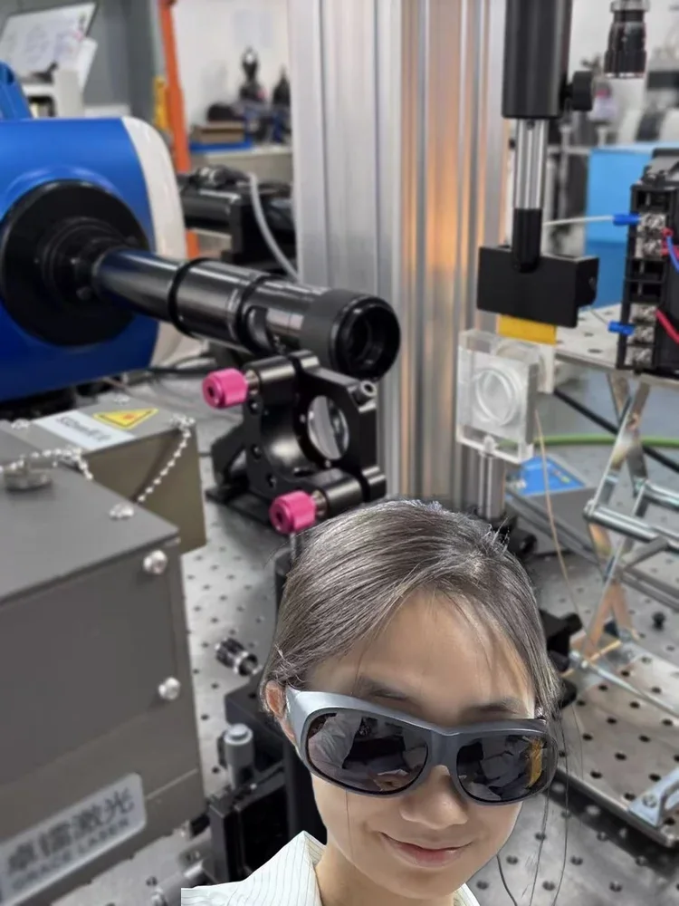
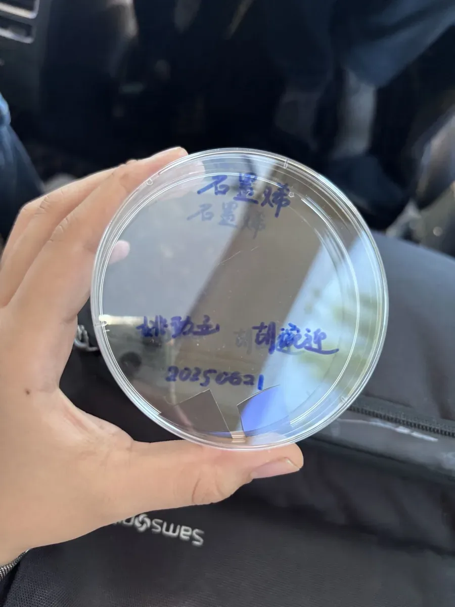

How precisely can light be measured and controlled?

The question
Every number in an optics textbook was once measured by someone at a bench. These experiments asked how close I could get to those numbers with my own hands.
My question: how precisely can light be measured, and how deliberately can its polarisation be controlled?
The method
I worked through twelve classic experiments, built every set-up myself and wrote each one up as a full report with an error analysis. The habits that mattered most: read many fringes at once, measure both sides of a pattern, and turn every screw in one direction only.




The finding
The measurements land close to the reference values: a He-Ne wavelength of about 633 nm against 632.8 nm, and Malus’s law within 0.4% at 45°.
Beyond
As a research intern in a nonlinear optics group at Peking University’s Institute of Physics, I also operated Raman and laser systems normally used by graduate students and tested more than twenty polarisation states of the beam.